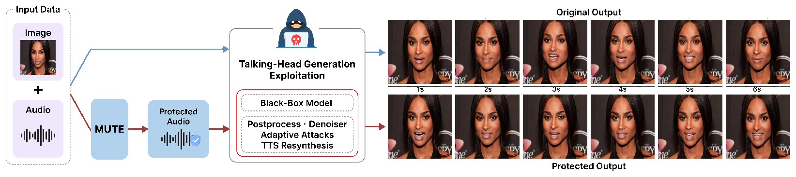
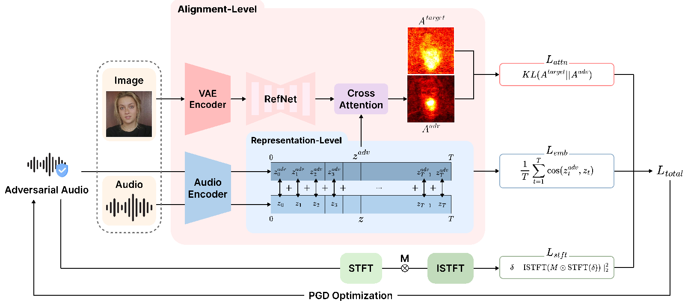
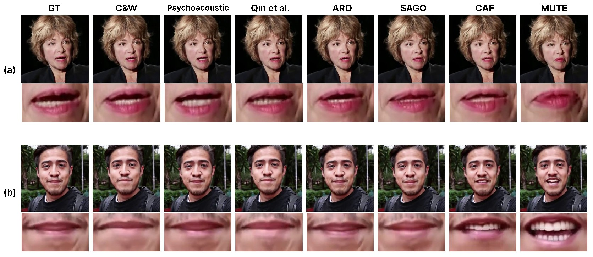
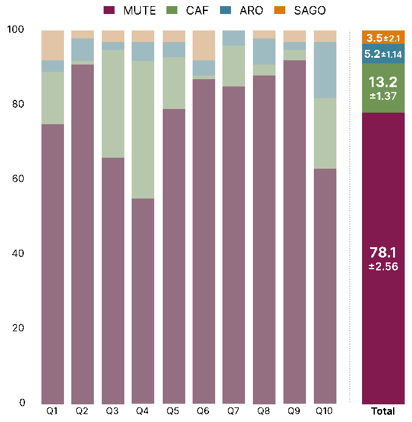

Imperceptible audio perturbations that break the audio–visual alignment talking-head models rely on, so a stolen voice can no longer drive a convincing lip-synced deepfake.
¹Soongsil University ²Chung-Ang University ³AIM Intelligence
* Equal contribution † Corresponding authors

Abstract
Talking-head generation models, which synthesize realistic facial animations from audio, are increasingly vulnerable to misuse in multimodal deepfake scenarios. Protecting against them is hard: these models depend on precise audio–visual alignment, yet effective audio protection methods remain largely underexplored.
We propose MUTE, an audio protection framework that uncouples the underlying audio–visual alignment through a multi-level strategy. MUTE combines (1) Alignment-level Disruption, which directly perturbs cross-modal attention to disrupt structural alignment, and (2) Representation-level Degradation, which perturbs temporal audio embeddings to degrade their representations. To improve robustness, perturbations are constrained in the STFT domain to high-energy regions, making them resistant to post-processing, denoising, and adaptive attacks. An optional speaker-level objective further mitigates bypass via TTS-based resynthesis. MUTE consistently degrades lip synchronization across both white-box and black-box talking-head models while preserving perceptual audio quality, remains effective under real-world transformations, and can be combined with image-based approaches for stronger multimodal protection.
Method
Given clean audio x, MUTE crafts xadv = x + δ with ‖δ‖∞ ≤ ε, optimized with PGD on a surrogate latent-diffusion talking-head model (Hallo). Only the audio is modified; the attacker's portrait is left untouched.

Results · Voice protection
Talking-head videos generated by the surrogate model Hallo from the same portrait, driven either by clean audio (GT) or by audio protected with each method. All videos play in sync; click any video to hear its audio. The perturbations are hard to hear, but MUTE's lip motion visibly drifts away from the speech.

Table 1: Comparison with audio adversarial attack baselines (surrogate: Hallo)
| TalkingHead-1KH | CelebV-HQ | |||||||||||||||
|---|---|---|---|---|---|---|---|---|---|---|---|---|---|---|---|---|
| Method | WER↓ | STOI↑ | PESQ↑ | Sync↓ | M-LMD↑ | FID↑ | FVD↑ | E-FID↑ | WER↓ | STOI↑ | PESQ↑ | Sync↓ | M-LMD↑ | FID↑ | FVD↑ | E-FID↑ |
| C&W | 13.397 | 0.922 | 2.322 | 3.740 | 1.096 | 1.855 | 1.442 | 3.646 | 13.057 | 0.948 | 2.702 | 4.039 | 1.108 | 1.662 | 1.247 | 3.508 |
| Psychoacoustic | 12.140 | 0.922 | 2.333 | 3.787 | 1.097 | 1.914 | 1.427 | 3.655 | 11.643 | 0.949 | 2.740 | 3.926 | 1.126 | 1.676 | 1.276 | 3.457 |
| Qin et al. | 15.649 | 0.925 | 2.301 | 4.468 | 0.983 | 1.825 | 1.329 | 3.443 | 13.870 | 0.942 | 2.544 | 4.543 | 1.054 | 1.479 | 1.182 | 3.331 |
| ARO | 15.673 | 0.903 | 2.518 | 3.518 | 1.155 | 1.983 | 1.510 | 3.662 | 13.870 | 0.931 | 2.689 | 3.818 | 1.176 | 1.574 | 1.260 | 3.457 |
| SAGO | 12.463 | 0.930 | 2.515 | 3.264 | 1.200 | 2.176 | 1.667 | 4.115 | 11.970 | 0.956 | 2.912 | 3.597 | 1.226 | 1.894 | 1.399 | 3.963 |
| CAF | 12.143 | 0.925 | 2.292 | 2.173 | 1.341 | 2.928 | 2.268 | 5.435 | 14.624 | 0.947 | 2.652 | 2.570 | 1.334 | 2.732 | 1.709 | 4.734 |
| MUTE | 11.681 | 0.936 | 2.522 | 1.332 | 1.627 | 3.183 | 2.363 | 5.489 | 10.467 | 0.959 | 2.940 | 2.152 | 1.693 | 2.756 | 1.790 | 5.062 |
| GT | 0.000 | 1.000 | 4.500 | 5.656 | 0.000 | 0.000 | 0.000 | 0.000 | 0.000 | 1.000 | 4.500 | 5.294 | 0.000 | 0.000 | 0.000 | 0.000 |
MUTE gives the lowest SyncNet score and the highest M-LMD on both datasets, and at the same time the best audio quality among protection methods (lowest WER, highest STOI and PESQ). Values are means over three seeds; standard deviations are reported in the paper. Bold marks the best protection method; GT is shown for reference.
Results · Black-box transferability
Perturbations are crafted once on Hallo and fed directly to four target models the attacker might use instead. Hallo2 shares a similar architecture with the surrogate; Audio2Head, SadTalker and Ditto differ significantly in design.
Table 3: Transferability under black-box settings
| Hallo2 | Audio2Head | SadTalker | Ditto | |||||
|---|---|---|---|---|---|---|---|---|
| Method | Sync↓ | M-LMD↑ | Sync↓ | M-LMD↑ | Sync↓ | M-LMD↑ | Sync↓ | M-LMD↑ |
| C&W | 3.773 | 1.144 | 4.269 | 1.222 | 5.540 | 0.629 | 4.024 | 0.697 |
| Psychoacoustic | 3.747 | 1.137 | 4.241 | 1.188 | 5.503 | 0.630 | 4.002 | 0.697 |
| Qin et al. | 4.535 | 1.027 | 4.510 | 1.104 | 5.702 | 0.583 | 4.182 | 0.678 |
| ARO | 3.546 | 1.192 | 4.182 | 1.203 | 5.297 | 0.658 | 3.803 | 0.781 |
| SAGO | 3.278 | 1.219 | 4.335 | 1.133 | 5.418 | 0.563 | 3.959 | 0.704 |
| CAF | 2.280 | 1.373 | 4.005 | 1.246 | 5.425 | 0.642 | 3.994 | 0.703 |
| MUTE | 1.397 | 1.679 | 3.627 | 1.299 | 4.703 | 0.864 | 3.457 | 0.884 |
| GT | 5.688 | 0.000 | 5.314 | 0.000 | 6.389 | 0.000 | 4.778 | 0.000 |
MUTE achieves the lowest Sync and highest M-LMD on every target model, showing that disrupting audio–visual alignment transfers across architectures.
Results · Robustness
An attacker may try to clean the protected audio first. We test down/upsampling (16→8→16 kHz) and adaptive spectral filtering, model-based denoising with Demucs and diffusion-based WavePurifier, and gradient-based adaptive attacks (BPDA, EOT) that check for gradient obfuscation.
Table 4: Robustness under post-processing, denoising and adaptive attacks
| Down/Upsampling | Spectral Filtering | Demucs | WavePurifier | BPDA | EOT | |||||||
|---|---|---|---|---|---|---|---|---|---|---|---|---|
| Method | Sync↓ | M-LMD↑ | Sync↓ | M-LMD↑ | Sync↓ | M-LMD↑ | Sync↓ | M-LMD↑ | Sync↓ | M-LMD↑ | Sync↓ | M-LMD↑ |
| C&W | 3.791 | 0.971 | 3.884 | 0.987 | 3.968 | 1.031 | 4.071 | 0.940 | 4.878 | 0.557 | 4.834 | 0.542 |
| Psychoacoustic | 3.825 | 0.979 | 3.878 | 1.004 | 3.953 | 1.042 | 4.059 | 0.935 | 4.840 | 0.555 | 4.854 | 0.564 |
| Qin et al. | 4.032 | 0.955 | 4.346 | 0.950 | 4.569 | 0.978 | 3.974 | 0.952 | 4.926 | 0.564 | 4.947 | 0.530 |
| ARO | 3.607 | 1.069 | 3.647 | 1.074 | 3.612 | 1.132 | 4.059 | 0.985 | 4.778 | 0.555 | 4.829 | 0.549 |
| SAGO | 3.805 | 1.017 | 3.801 | 1.087 | 3.407 | 1.141 | 4.101 | 0.922 | 4.912 | 0.562 | 4.923 | 0.547 |
| CAF | 3.533 | 1.089 | 3.063 | 1.178 | 2.566 | 1.259 | 3.940 | 0.991 | 4.810 | 0.563 | 4.794 | 0.563 |
| MUTE | 2.914 | 1.254 | 2.251 | 1.410 | 1.534 | 1.593 | 3.494 | 1.217 | 4.269 | 0.655 | 4.298 | 0.647 |
MUTE remains the strongest method under every transformation. BPDA and EOT reduce protection for all methods, but MUTE still outperforms every baseline, indicating genuine robustness rather than gradient obfuscation.
The hardest setting combines both: the protected audio is purified and then fed to an unseen talking-head model.
Results · TTS resynthesis
An attacker aware of the protection could clone the speaker with TTS and synthesize fresh, perturbation-free speech. We use the protected audio as the speaker reference for CosyVoice and XTTS-v2 (white-box) and Chatterbox (black-box), then measure speaker similarity (Sim, ECAPA-TDNN) and the defense success rate (DSR: share of synthesized samples judged a different speaker, cosine similarity ≤ 0.25).
Table 5: Effect of the optional speaker-level objective (λspk)
| CosyVoice (white-box) | XTTS-v2 (white-box) | Chatterbox (black-box) | Lip-sync | |||||
|---|---|---|---|---|---|---|---|---|
| Setting | Sim↓ | DSR↑ | Sim↓ | DSR↑ | Sim↓ | DSR↑ | Sync↓ | M-LMD↑ |
| Unprotected | 0.488 | 2.53 | 0.469 | 2.80 | 0.574 | 4.53 | 5.656 | 0.000 |
| λspk = 0 | 0.368 | 14.67 | 0.392 | 14.93 | 0.449 | 15.07 | 1.332 | 1.627 |
| λspk = 0.01 | 0.200 | 67.73 | −0.102 | 99.33 | 0.280 | 43.87 | 1.496 | 1.541 |
| λspk = 0.05 | 0.180 | 71.47 | −0.120 | 99.47 | 0.248 | 50.40 | 1.918 | 1.465 |
| λspk = 0.10 | 0.170 | 74.13 | −0.120 | 99.73 | 0.239 | 52.67 | 2.218 | 1.415 |
With λspk = 0.01, MUTE exceeds 43% DSR on all three TTS models while keeping strong lip-sync disruption (Sync 1.496, M-LMD 1.541). Larger λspk raises DSR further at some cost to alignment disruption.
Results · Multimodal protection
MUTE only touches the audio, so it can be stacked with image-based protection of the portrait. Below, the portrait is protected with MIS or Silencer and the audio with CAF or MUTE.
Table 2: Image protection combined with voice protection
| Image + Voice protection | Sync↓ | M-LMD↑ | FID↑ | FVD↑ | E-FID↑ |
|---|---|---|---|---|---|
| MIS | 3.039 | 1.988 | 142.692 | 23.009 | 162.260 |
| Silencer | 2.170 | 2.168 | 144.555 | 24.029 | 160.298 |
| MIS + CAF | 1.212 | 2.157 | 145.166 | 24.526 | 163.048 |
| Silencer + CAF | 0.941 | 2.152 | 146.111 | 25.764 | 165.884 |
| MIS + MUTE | 0.902 | 2.261 | 147.141 | 25.289 | 162.983 |
| Silencer + MUTE | 0.760 | 2.233 | 146.544 | 25.843 | 168.829 |
Pairing MUTE with either image method gives lower Sync and higher M-LMD than pairing it with CAF, reaching a Sync score of 0.760 with Silencer, while keeping comparable visual-quality degradation.
Results · User study
Participants watched videos generated from audio protected by MUTE, CAF, ARO and SAGO and picked the one with the most noticeable lip-sync mismatch. With 100 participants and 10 samples (1,000 responses), MUTE was chosen in 78.1% ± 2.56% (95% CI) of cases, against 13.2% for CAF, 5.2% for ARO and 3.5% for SAGO.
Try it yourself. The clips below come from the study and are shown in a shuffled order. Pick the one you think is most out of sync, then reveal the methods.

Ablation
Effect of the phase ratio ρ (share of iterations spent on the alignment-level objective), the STFT loss weight λ, and the perturbation budget ε. Sync↓ is reported for the alignment columns.
Table 6: Phase ratio ρ
| ρ | Time↓ | Hallo | Audio2Head | SadTalker |
|---|---|---|---|---|
| 1.0 | 78.4 | 3.920 | 3.958 | 5.048 |
| 0.2 | 20.1 | 1.419 | 3.798 | 4.898 |
| 0.1 (ours) | 12.3 | 1.332 | 3.627 | 4.703 |
| 0.05 | 9.2 | 1.470 | 3.799 | 4.899 |
| 0.0 | 4.8 | 1.427 | 3.904 | 5.063 |
ρ = 1 uses only the alignment-level objective, ρ = 0 only the representation-level one. The latter is stronger and cheaper on the surrogate, the former transfers better; ρ = 0.1 balances both.
Table 7: STFT loss weight λ
| λ | Clean | Down/Up | Demucs |
|---|---|---|---|
| 0 | 1.492 | 3.178 | 1.816 |
| 5 (ours) | 1.332 | 2.914 | 1.534 |
| 10 | 1.429 | 2.933 | 1.494 |
| 20 | 1.451 | 2.971 | 1.564 |
| 50 | 1.474 | 3.024 | 1.675 |
Adding ℒstft improves both clean protection and robustness; λ = 5 gives the best balance.
Table 8: Perturbation budget ε
| ε | WER↓ | STOI↑ | PESQ↑ | Sync↓ |
|---|---|---|---|---|
| 0.002 | 10.35 | 0.948 | 2.949 | 1.898 |
| 0.004 (ours) | 11.68 | 0.936 | 2.522 | 1.332 |
| 0.006 | 12.25 | 0.907 | 2.298 | 1.200 |
| 0.008 | 12.89 | 0.891 | 2.108 | 1.122 |
| 0.010 | 13.30 | 0.885 | 1.945 | 1.027 |
WER in %. A larger budget disrupts lip sync more but lowers audio quality; ε = 0.004 is the operating point.
Citation
@inproceedings{kim2026mute,
title = {MUTE: Multi-Level Alignment Uncoupling Against
Talking-Head Exploitation for Voice Protection},
author = {Kim, Donghyun and Hong, Jin and Kim, Seungmin and
Kim, Dain and Kwon, Junseok and Choi, Deaseon},
booktitle = {Advances in Neural Information Processing Systems (NeurIPS)},
year = {2026}
}